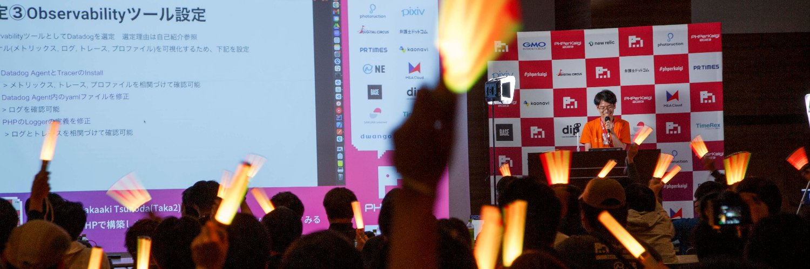
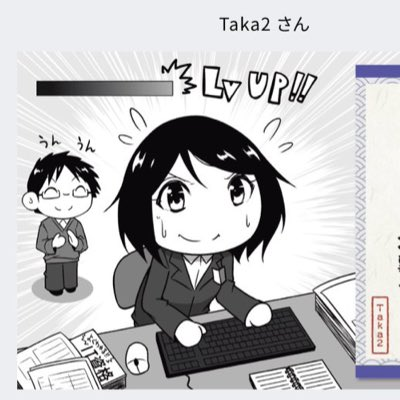

Hello, I'm Takaaki Tsunoda 👋
👨💻 Job 👨💻
- Sales Engineer, Datadog (Feb 2022~)
- Platform SRE and Delivery Program Manager, Kyndryl & IBM (~Feb 2022)
🌐 Community 🌐
- Jaguer Observability/SRE Subcommittee Management(Oct 2022~)
- Kyndryl Slack Core Champion & IBM Slack Champion (~Feb 2022)
📜 Certifications 📜
- Project Management Professional (PMP)®
- ITIL® Foundation Certificate in IT Service Management
- Datadog Certified: Datadog Fundamentals
- Other > credly / credentials-nr / slack-certified
📚 Decks and Blogs 📚
🎤 Public Speaking 🎤
🏅 Awards 🏅
- Datadog Top Dog Q1 SE of the Quarter (May 2023)
- Datadog Sales Engineer 2022 Performance Highlights (Jan 2023)
- Datadog APAC Mid-Market Sales Engineer of 2022 Q3 (Oct 2022)
- Datadog APAC Sales Engineer Rookie Award of 2022 Q2 (Jul 2022)
- IBM Manager's Choice Award (Nov 2019)
- IBM Project Service Delivery Manager Award (Sep 2019)
- IBM Manager's Choice Award (Jun 2018)
📧 Contact 📧